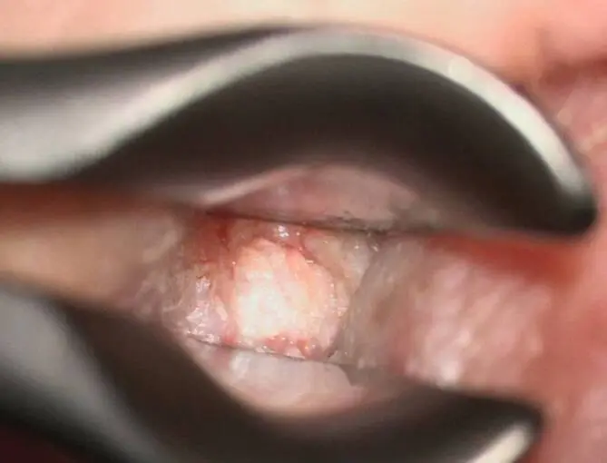
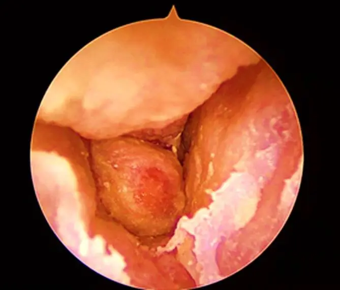
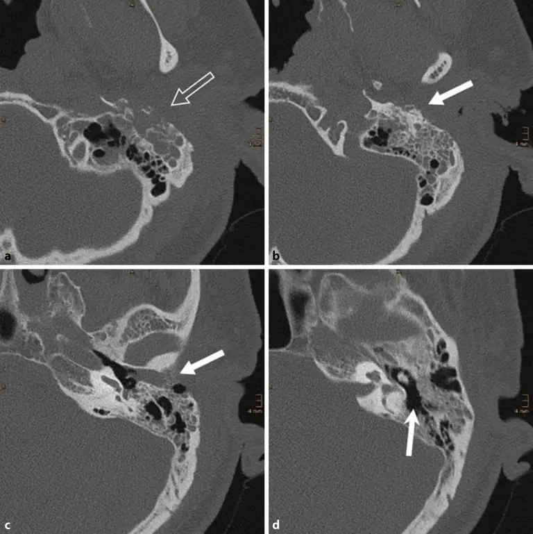

DX.9 — Otite externe nécrosante 🚩 E2
Une otite externe qui ne guérit pas chez un patient âgé ou diabétique peut cacher une ostéomyélite de la base du crâneS5. La douleur nocturne disproportionnée et la granulation persistante du conduit doivent alors faire adresser le patient à l’hôpitalS1. Chaque semaine perdue permet à l’infection de gagner l’os temporal, les nerfs crâniens et les sinus veineuxS11.
1. Définition
Le consensus britannique de 2023 définit l’otite externe nécrosante comme une infection sévère du conduit auditif externe qui s’étend à la base latérale du crâneS3. Les sociétés britanniques d’infectiologie, d’oto-rhino-laryngologie (ORL), d’otologie et de neuroradiologie ont approuvé ce texteS3. Le diagnostic devient certain lorsque l’otalgie s’associe à une otorrhée actuelle ou passée et à une granulation ou une inflammation du conduitS3. Il exige en outre une image compatible au scanner ou à l’imagerie par résonance magnétique (IRM), et l’exclusion histologique d’une tumeur suspectéeS3. La ligne directrice néerlandaise de 2025 reprend cette définition et range la maladie parmi les ostéomyélites de la base du crâneS5. Le consensus préfère le terme « nécrosante » à « maligne », car la tumeur maligne reste un diagnostic différentiel majeur et le mot « maligne » égareS3.
2. Épidémiologie (Suisse, puis Europe)
Le service d’ORL des Hôpitaux universitaires de Genève (HUG) présente l’otite nécrosante comme une complication rare de l’otite externe, dont la mortalité peut atteindre 50 %S1. En Angleterre, les admissions annuelles sont passées de 123 en 2002-2003 à 1561 en 2022-2023, soit 15 449 cas sur la période étudiéeS12. Les chiffres clés, le terrain à risque et l’histoire naturelle expliquent le rang 🚩 E2 de ce diagnostic.
Chiffres clés, de la Suisse vers l’Europe
Le tableau rassemble les seuls chiffres lus ; chacun décrit une population précise qu’il ne faut pas généraliser.
| Chiffre | Population | Année | Source |
|---|---|---|---|
| Mortalité pouvant atteindre 50 % | Données reprises par l’ORL des HUG | 2019 | HUGS1 |
| 123 puis 1561 admissions par an | Angleterre, statistiques hospitalières nationales | 2002-2023 | KongS12 |
| 71,2 % d’hommes ; 58,8 % de patients de 75 ans ou plus | Angleterre, 15 449 cas | 2002-2024 | KongS12 |
| Séjour moyen de 15,9 jours | Angleterre | 2002-2024 | KongS12 |
| Diabète chez 84 % des patients | Revue de 1668 patients reprise par la ligne directrice néerlandaise | 2025 | NVKNOS5 |
| Mortalité toutes causes à un an estimée à 7 % | Même revue | 2025 | NVKNOS5 |
| Survie globale de 38 % à cinq ans | Série citée par le consensus britannique | 2023 | HodgsonS3 |
| Récidive de 15 à 20 % | Cohortes traitées | 2024-2025 | LiuS15 ; NVKNOS7 |
La chute d’environ 30 % des cas pendant la pandémie de COVID-19 a été suivie d’une hausse de 35 % l’année suivante en AngleterreS12. Les auteurs relient la croissance de l’incidence au vieillissement et à la progression du diabète, dont la prévalence anglaise est passée de 3,3 % à 6,1 %S12.
Terrain à risque
La revue reprise par la ligne directrice néerlandaise trouve un diabète chez 84 % des patients, contre 9,3 % dans la population généraleS5. Une immunodépression d’une autre origine concerne 6 % des patients, et 10 % n’ont aucun facteur d’immunodépression identifiéS5. La cohorte de Nottingham, au Royaume-Uni, décrit un âge moyen de 78,4 ans, 75,8 % d’hommes et 62,9 % de diabétiquesS15.
La revue autrichienne de 2025 ajoute l’insuffisance rénale chronique aux affections prédisposantes et souligne qu’un diabète mal équilibré reste typiqueS11. La cohorte munichoise rapporte un âge moyen de 79,9 ans et une hémoglobine glyquée (HbA1c) moyenne de 8,35 %S14. Le référentiel de la Société française d’ORL retient l’âge supérieur à 70 ans, l’immunodépression et le diabète comme terrains qui imposent une prise en charge rapide de toute otite externeS18.
Le diabète ne résume cependant pas le terrain : l’équipe genevoise a publié des formes atypiques, dont une à Aspergillus flavus, qui contredisent l’image du seul diabétique infecté par PseudomonasS2.
Histoire naturelle
L’infection commence dans le conduit, puis gagne l’os temporal, la base latérale du crâne, les nerfs crâniens et, plus tard, l’endocrâneS11. Dans la cohorte de Reims, 59 % des patients présentaient déjà une forme étendue, diagnostiquée en moyenne 22 jours plus tard que les formes limitéesS13. La cohorte de Nottingham montre des neuropathies crâniennes chez 14,5 % des patients, une méningite chez 3,2 % et une thrombose du sinus sigmoïde chez 3,2 %S15.
La récidive survient jusqu’à un an après la fin du traitement, ce qui justifie la surveillance prolongée décrite au point 11S7. Dans une cohorte de Sheffield, un indice de comorbidité de Charlson élevé prédisait la mortalité à un an, avec un rapport de cotes de 1,34S17.
3. Physiopathologie
Le conduit auditif externe possède une partie latérale cartilagineuse et une partie médiale osseuseS11. La base à connaître montre où l’infection franchit sa paroiS11. Pseudomonas aeruginosa cause environ 95 % des cas selon l’ORL des HUG, devant Aspergillus fumigatus et Staphylococcus aureusS1. La revue autrichienne décrit une infection qui progresse de la peau au cartilage, puis à l’os, jusqu’à l’ostéomyélite de la base latérale du crâneS11. La chaîne lésionnelle et le tableau de corrélation relient chaque étape à son examen et à son traitement.
Base à connaître : le conduit, ses fentes et ses voisins
Le plancher du conduit cartilagineux porte des fentes, les fissures de Santorini, par lesquelles l’infection gagne la parotide et l’articulation temporo-mandibulaireS11. Un foramen tympanique persistant, ou foramen de Huschke, constitue une seconde voie vers la fosse infratemporaleS11. Chez l’enfant, le nerf facial est plus proche de ces fissures, si bien que la paralysie faciale survient plus tôt et plus souventS11.
Le nerf facial (VII) est le nerf crânien le plus souvent atteint ; les nerfs IX, X, XI et XII sont touchés dans les formes sévèresS11. L’atteinte de ces nerfs signe donc une infection qui a quitté le conduit pour la base du crâne.
Conduit auditif externe : de la peau au rocher. Ce schéma en couleur montre une coupe frontale de l’oreille, vue de face, du pavillon jusqu’à la cochlée

Lisez d'abord seul ce cliché (conduit auditif externe : de la peau au rocher) : cherchez vous-même le signe.
La copie annotée (conduit auditif externe : de la peau au rocher) porte les repères numérotés décrits ci-dessous.
- 1. La partie cartilagineuse du conduit porte des fentes qui laissent passer l’infection vers les tissus mous.S11
- 2. La jonction ostéocartilagineuse porte le tissu de granulation caractéristique de l’otite nécrosante.S1
- 3. Le tympan ferme le conduit en dedans ; une extension au-delà de l’os tympanal définit la forme étendue à Reims.S13
- 4. Les tissus mous situés sous le plancher du conduit conduisent l’infection vers la parotide et la base du crâne.S11
- Un tympan visible ne rassure pas : à Reims, il était plus souvent visible dans les formes étendues.S13
Ce que l'image décide. Une granulation qui persiste à la jonction ostéocartilagineuse chez un patient âgé ou diabétique impose un scanner du rocher.

Chaîne lésionnelle, de la bactérie au signe
- Amorce : une otite externe banale survient chez un sujet âgé, diabétique ou immunodéprimé, terrain que le référentiel français désigne comme à risqueS18.
- Développement : Pseudomonas aeruginosa gagne le cartilage, et une granulation apparaît à la jonction ostéocartilagineuseS1S11.
- Installation : l’os tympanal s’érode, puis l’ostéite gagne la mastoïde et la base du crâne, ce que montre le scannerS3.
- Diffusion : l’infection atteint la parotide, l’articulation temporo-mandibulaire et l’espace parapharyngé par les fissures de SantoriniS11.
- Complication : l’atteinte des nerfs crâniens, la thrombose veineuse cérébrale ou l’empyème définissent la forme complexe du consensus britanniqueS3.
Le périoste enflammé explique la douleur intense et profonde, que l’ORL des HUG décrit comme disproportionnée par rapport à l’aspect du conduitS1.
Corrélation : perturbation, exploration, thérapeutique
Le tableau relie chaque perturbation à l’examen qui la montre et au geste qui la corrige ; les sources figurent dans les fenêtres consacrées à l’imagerie et au traitement.
| Perturbation | Exploration qui la montre | Thérapeutique qui la corrige |
|---|---|---|
| Germe dans le conduit | Prélèvement de tissu ou frottis avant antibiotiqueS11 | Antibiotique antipyocyanique adapté à l’antibiogrammeS6 |
| Granulation et inflammation du conduit | OtomicroscopieS11 | Nettoyage régulier sous microscopeS11 |
| Érosion de l’os tympanal | Scanner du rocher en fenêtre osseuseS8 | Antibiothérapie prolongée de six semainesS7 |
| Œdème médullaire et tissus mous profonds | IRM avec gadoliniumS8 | Même antibiothérapie, prolongée si la réponse reste partielleS7 |
| Hyperglycémie | Glycémie et HbA1cS9 | Équilibre glycémique avec l’internisteS9 |
| Tumeur imitant l’infection | BiopsieS3 | Prise en charge oncologique |
4. Démarche diagnostique
Le médecin évoque d’abord ce diagnostic lorsqu’une otite externe correctement traitée échoue, surtout chez un sujet âgé, diabétique ou immunodépriméS5. Il élimine ensuite trois imitateurs dangereux : le carcinome du conduit, le cholestéatome du conduit et l’otite moyenne compliquéeS11. Le tableau discriminant donne pour chacun l’élément qui tranche et le piège.
Carcinome épidermoïde du conduit
La revue autrichienne désigne le carcinome du conduit comme le diagnostic différentiel le plus important et conseille une biopsie précoce dès qu’un doute existeS11. Le consensus britannique exige d’ailleurs l’exclusion histologique de la malignité pour retenir une forme certaine lorsqu’une tumeur est suspectéeS3. Dans une cohorte anglaise de 33 patients suspects, quatre avaient un autre diagnostic, dont un cholestéatome du conduit et un carcinome épidermoïdeS16.
Carcinome épidermoïde du conduit, le grand imitateur. Cette photographie prise à travers un spéculum montre une tumeur du conduit qui ressemble à une otite nécrosante

Lisez d'abord seul ce cliché (carcinome épidermoïde du conduit, le grand imitateur) : cherchez vous-même le signe.
La copie annotée (carcinome épidermoïde du conduit, le grand imitateur) porte les repères numérotés décrits ci-dessous.
- 1. La masse blanchâtre et bourgeonnante du conduit imite une granulation inflammatoire.S11
- La ressemblance clinique est telle que la revue autrichienne conseille une biopsie dès que le tableau reste incertain.S11
Ce que l'image décide. Une granulation douteuse impose une biopsie précoce pour exclure un carcinome.
Diagnostics discriminants
| Diagnostic | Élément qui tranche | Piège | Conduite si positif |
|---|---|---|---|
| Otite externe nécrosante 🚩 E2 | Érosion osseuse du conduit au scanner, ou œdème médullaire à l’IRMS3 | Un scanner précoce peut rester normalS16 | Hospitalisation, prélèvements, antibiothérapie antipyocyaniqueS1 |
| Carcinome épidermoïde du conduit | Histologie de la granulationS11 | La surinfection masque la tumeur | Bilan oncologique ORL |
| Cholestéatome du conduit | Croûtes de kératine et os exposé avec marche d’escalier au plancherS11 | L’imagerie seule ne tranche pas l’extensionS11 | Imagerie et traitement ORL spécifique |
| Otite externe aiguë sévère | Réponse au traitement local en deux semainesS5 | La forme « possible » du consensus britannique ressemble à une otite sévèreS5 | Traitement local et contrôle à deux semaines |
Le cholestéatome de l’oreille moyenne, traité dans le DX.8, se distingue par une rétraction ou une perforation tympanique avec squames, alors que l’otite nécrosante naît dans le conduitS11.
5. Anamnèse ciblée et drapeaux rouges
L’interrogatoire cherche une douleur nocturne et disproportionnée, une otorrhée qui persiste et l’échec d’un traitement local bien conduitS5. Il précise ensuite le terrain et les médicaments, puis les signes de diffusion décrits dans la fenêtre des drapeaux rougesS1.
Otalgie : le symptôme cardinal
L’otalgie touche 96 % des patients de la revue reprise par la ligne directrice néerlandaiseS5. Elle siège au fond de l’oreille, irradie vers la tempe ou la mâchoire et s’aggrave souvent la nuit, selon la revue autrichienneS11. Son intensité dépasse ce que laisse prévoir l’aspect du conduit, car elle naît du périoste et de l’osS1.
La douleur est typique lorsqu’elle croît malgré les gouttes et les antalgiques, car une otite externe simple s’améliore en quelques joursS5. Une douleur à la mastication oriente vers l’atteinte de l’articulation temporo-mandibulaire, présente chez 41 % des formes étendues contre 12 % des formes limitées à ReimsS13.
Otorrhée
L’otorrhée touche 78 % des patients, si bien que son absence au moment de l’examen n’exclut pas le diagnosticS5. Le consensus britannique accepte d’ailleurs une otorrhée seulement rapportée dans l’histoire récenteS3. Une otorrhée qui persiste après deux semaines de traitement adapté à la culture doit faire réévaluer le diagnosticS5.
Échec du traitement local
La ligne directrice néerlandaise demande d’évoquer la maladie lorsque le traitement correct d’une otite externe banale échoueS5. Elle précise que la plupart des symptômes doivent céder en deux semaines de traitement adapté, et qu’une réévaluation s’impose à trois semainesS5. Le médecin note donc la date de début, les gouttes reçues, leur durée et l’observance, car ces éléments datent l’échec.
Un patient suspect doit être vu par l’ORL dans les deux semaines selon cette même ligne directrice ; un drapeau rouge raccourcit ce délai au jour mêmeS5.
Terrain, comorbidités et médicaments
Le médecin recherche un diabète et son équilibre, une insuffisance rénale chronique et toute immunodépression, car ces terrains dominent les sériesS11. Il note les antibiotiques déjà reçus, car la ligne directrice néerlandaise déconseille une quinolone si le patient en a déjà reçu une pendant l’épisodeS6. Il relève aussi un traitement par sulfonylurée ou insuline, car la ciprofloxacine expose le diabétique âgé à la dysglycémieS20.
Drapeaux rouges et action immédiate
| Drapeau rouge | Signification | Action immédiate |
|---|---|---|
| Paralysie faciale périphérique | Infection de la base du crâne au contact du VIIS11 | Avis ORL le jour même et scanner du rocher |
| Dysphonie, troubles de déglutition, faiblesse de l’épaule ou de la langue | Atteinte des nerfs IX à XII, donc forme complexeS3 | Hospitalisation, IRM et antibiothérapie intraveineuse |
| Céphalées, fièvre, troubles de conscience | Méningite, empyème ou thrombose veineuseS11 | Urgence neurologique et imagerie cérébrale avec injection |
| Trismus ou douleur à la mastication | Extension à l’articulation temporo-mandibulaireS1 | Scanner et avis ORL rapide |
| Tuméfaction cervicale profonde | Phlegmon parapharyngé ou abcès de BezoldS11 | Imagerie cervicale et avis chirurgical |
6. Examen physique ciblé, région par région
L’examen suit l’ordre réel du geste : inspection périauriculaire, palpation, otoscopie, nerfs crâniens, acoumétrie et examen généralS11. L’oreille saine constitue toujours la référence normale avant l’examen de l’oreille malade.
Inspection de la région périauriculaire
Le médecin recherche une asymétrie du pavillon, de la région prétragienne, de la mastoïde et du cou, en comparant les deux côtés. Un œdème périauriculaire existait chez 42 % des formes étendues de Reims et chez aucune forme limitéeS13. Ce signe a donc une forte valeur d’extension, alors que son absence ne rassure pas.
Palpation : tragus, mastoïde, articulation temporo-mandibulaire
La mobilisation du tragus réveille la douleur du conduit, comme dans toute otite externe, et ne distingue donc pas les deux maladies. La palpation de la région mandibulaire est douloureuse et un trismus peut apparaître, selon l’ORL des HUGS1. La palpation porte ensuite sur la région sous-mastoïdienne et parotidienne, car l’infection y descend par les fissures du plancherS11.
Otoscopie et otomicroscopie
Le signe recherché est une granulation à la jonction ostéocartilagineuse, que l’ORL des HUG décrit comme caractéristiqueS1. L’œdème peut fermer le conduit et cacher le tympan ; le microscope et l’aspiration douce de l’ORL permettent alors de voir le plancherS11. Un os exposé au plancher du conduit existait chez 16 % des formes étendues de Reims, contre aucune forme limitéeS13.
Le piège principal est le tympan bien visible : il était plus souvent vu dans les formes étendues, à 70 % contre 46 %, ce qui rassurait à tortS13.
Otomicroscopie d’une otite externe nécrosante. Cette photographie au microscope opératoire montre un conduit vu de dehors, le tympan au fond

Lisez d'abord seul ce cliché (otomicroscopie d’une otite externe nécrosante) : cherchez vous-même le signe.
La copie annotée (otomicroscopie d’une otite externe nécrosante) porte les repères numérotés décrits ci-dessous.
- Le tympan caché ne permet pas de juger l’extension : seule l’imagerie la précise.S3
Ce que l'image décide. Ce tableau justifie un prélèvement de la granulation, un bilan inflammatoire et un scanner du rocher.
Nerfs crâniens
Le médecin teste le VII par le froncement du front, la fermeture des yeux et le sourire, car une atteinte périphérique paralyse toute l’hémiface. La paralysie faciale touche 21 % des patients, et deux nerfs crâniens ou plus sont atteints chez 5 %S5. Il examine ensuite la voix et la déglutition (IX, X), le haussement d’épaule (XI) et la protrusion de la langue (XII)S11.
Une paralysie isolée du nerf abducens a aussi été décrite chez un homme de plus de 90 ans, avec une ostéite étendue à l’apex pétreuxS19. Ce cas rare rappelle qu’un examen oculomoteur complet fait partie du bilan d’extension.
Acoumétrie
L’épreuve de Weber latéralise le son vers l’oreille dont le conduit est obstrué, car l’obstacle réalise une surdité de transmission. Une latéralisation vers l’oreille saine signe au contraire une atteinte de l’oreille interne, qui impose une audiométrie. La cohorte munichoise cite les atteintes cochléaires et vestibulaires parmi les complications possiblesS14.
Examen général
La fièvre manque le plus souvent : elle ne concerne que 7 % des patients, ce qui en fait un mauvais critère de gravitéS5. Le médecin mesure la glycémie capillaire, recherche une raideur de nuque et note l’état cognitif, car le patient âgé exprime mal ses symptômes. Il note aussi les comorbidités, car l’indice de Charlson pèse sur le pronosticS17.
7. Approche syndromique
Le tableau se décompose en quatre syndromes, du conduit vers l’endocrâne ; leur somme décrit l’extension de la maladieS3. Le tableau syndromique les résume avant le détail.
Tableau syndromique
| Syndrome | Signes fonctionnels | Signes physiques |
|---|---|---|
| 7.1 Syndrome du conduit | Otalgie, otorrhée, hypoacousie | Granulation, œdème, os exposéS11 |
| 7.2 Syndrome d’ostéite temporale | Douleur profonde et nocturne | Œdème périauriculaire, douleur mastoïdienneS13 |
| 7.3 Syndrome des nerfs crâniens | Asymétrie faciale, dysphonie, fausses routes | Paralysie du VII, puis des IX à XIIS11 |
| 7.4 Syndrome endocrânien et cervical | Céphalées, confusion, douleur cervicale | Méningisme, tuméfaction cervicaleS11 |
7.1 Syndrome du conduit
Il associe l’otalgie, l’otorrhée et la granulation, qui forment le socle clinique obligatoire de la définition britanniqueS3. Son mécanisme est l’infection de la peau et du cartilage, qui reste visible à l’otoscopieS11.
7.2 Syndrome d’ostéite temporale
Il traduit l’atteinte de l’os tympanal et de la mastoïde ; la douleur devient profonde, permanente et nocturne, car le périoste et l’os sont enflammésS1. L’œdème périauriculaire et la douleur de l’articulation temporo-mandibulaire signalent une extension au-delà de l’os tympanalS13.
7.3 Syndrome des nerfs crâniens
Il résulte du contact de l’infection avec les nerfs qui traversent la base du crâne ; le VII est le premier touchéS11. Sa présence fait classer la maladie comme complexe dans le consensus britanniqueS3.
7.4 Syndrome endocrânien et cervical
Il regroupe la thrombose veineuse cérébrale, l’empyème, l’abcès cérébral et la méningite, ainsi que les phlegmons du couS11. Le consensus britannique compte toute diffusion intracrânienne parmi les critères de forme complexeS3.
8. Diagnostic positif et critères
Le consensus britannique de 2023 distingue une forme certaine, une forme possible et une forme complexe ; ses critères restent les plus utilisés en EuropeS3. La ligne directrice néerlandaise de 2025 adopte la forme certaine mais rejette la forme possible, qu’elle juge plus proche d’une otite externe sévèreS5. Le consensus multicentrique britannique COSNOE de 2024 ajoute des critères de recherche fondés sur six thèmes, dont la persistance des symptômes au-delà de deux semainesS4.
Critères du consensus britannique (2023)
| Catégorie | Critères exigés |
|---|---|
| Forme certaine | Tous présents : otalgie avec otorrhée actuelle ou passée ; granulation ou inflammation du conduit ; malignité exclue par histologie si elle est suspectée ; érosion osseuse du conduit avec inflammation des tissus mous au scanner, ou œdème médullaire temporal à l’IRMS3 |
| Forme possible | Imagerie sans signe osseux, mais otalgie et otorrhée, granulation ou inflammation, et au moins un élément parmi immunodépression, douleur nocturne, protéine C réactive ou vitesse de sédimentation élevées sans autre cause, échec de plus de deux semaines de traitement localS3 |
| Forme complexe | Forme certaine avec paralysie du VII ou d’un nerf crânien inférieur, thrombose veineuse cérébrale, érosion d’autres sites de la base du crâne ou extension intracrânienneS3 |
Ce qui suffit : la réunion des quatre critères de la forme certaine. Ce qui ne suffit pas : une culture positive à Pseudomonas, une protéine C réactive élevée ou un diabète, car la forme certaine exige aussi l’imagerieS3.
Le consensus britannique définit aussi les issues : la guérison exige trois mois sans douleur ni otorrhée après l’arrêt des antibiotiques, et la récidive survient après ce délaiS3. La non-réponse se définit par l’absence d’amélioration après 14 jours de traitement optimalS3.
9. Examens complémentaires
9.a Référence. Aucun examen isolé ne confirme ni n’exclut la maladie avec une sensibilité et une spécificité suffisantes ; la référence reste la réunion clinique, histologique et radiologique de la définition britanniqueS3.
9.b Première intention. Le scanner du rocher est l’examen initial de choix selon le consensus britanniqueS3. Il s’accompagne d’un bilan biologique et de prélèvements microbiologiques et histologiques réalisés avant l’antibiotique si l’état le permetS11.
9.c Alternatives. L’IRM avec gadolinium remplace ou complète le scanner pour les tissus mous, et la médecine nucléaire aide lorsque le scanner reste douteuxS8. Le débit de filtration glomérulaire, mesuré dès le bilan initial, guide ensuite le choix des examens injectés et des dosesS9.
9.d Deuxième intention. La surveillance par imagerie permet de juger la réponse et de décider l’arrêt dans les formes complexesS7. Le tableau d’interprétation résume les résultats et leur conduite.
Scanner du rocher
Indication : toute suspicion d’otite nécrosante, car le scanner est rapide, largement disponible et voit l’érosion osseuseS8. Prescription : le scanner du rocher se fait en coupes fines et en fenêtre osseuse, avec une reconstruction en fenêtre de tissus mousS8.
Interprétation : une érosion de l’os du conduit avec inflammation des tissus mous confirme la forme certaineS3. Une érosion de l’apex pétreux, du clivus ou du foramen stylo-mastoïdien signe la forme complexeS3. La méta-analyse reprise par la ligne directrice néerlandaise attribue au scanner une sensibilité de 0,96S8.
Piège : dans une cohorte anglaise, six des douze patients dont le scanner était négatif ont finalement reçu le diagnostic grâce à une autre imagerieS16. Un scanner normal chez un patient très suspect impose donc une IRM ou une scintigraphie.
Scanner du rocher : ostéite de l’os temporal. Ces quatre coupes axiales de scanner en fenêtre osseuse montrent le rocher d’un homme de quatre-vingts ans

Lisez d'abord seul ce cliché (scanner du rocher : ostéite de l’os temporal) : cherchez vous-même le signe.
La copie annotée (scanner du rocher : ostéite de l’os temporal) porte les repères numérotés décrits ci-dessous.
- Un scanner négatif n’exclut pas la maladie : la moitié des scanners négatifs d’une cohorte anglaise cachaient une otite nécrosante.S16
Ce que l'image décide. Une érosion osseuse du conduit avec inflammation des tissus mous remplit le critère radiologique de la forme certaine du consensus britannique.
IRM avec gadolinium
L’IRM montre l’œdème de la moelle osseuse temporale et l’inflammation des tissus mous, ce qui suffit à remplir le critère radiologique britanniqueS3. Elle évalue mieux que le scanner les tissus mous, les vaisseaux et l’endocrâne, selon la ligne directrice néerlandaiseS8. Sa sensibilité atteint 0,94 dans la méta-analyse citée par cette ligne directriceS8.
La revue autrichienne juge le scanner et l’IRM également aptes à établir le diagnostic, mais le scanner reste préféré en routine, car il est plus rapide et moins coûteuxS11. L’IRM devient indispensable devant une paralysie d’un nerf crânien, une céphalée ou un trouble neurologique.
Médecine nucléaire
La scintigraphie osseuse au technétium 99m atteint une sensibilité de 0,97 et la scintigraphie au gallium 67 de 0,94 dans la méta-analyse reprise par la ligne directrice néerlandaiseS8. Ces examens sont très sensibles mais restent peu spécifiques, car toute inflammation osseuse les rend positifs.
La tomographie par émission de positons au fluorodésoxyglucose (TEP-FDG) a montré une sensibilité de 96,7 % et une spécificité de 93,3 % dans une série de 77 patientsS8. La ligne directrice néerlandaise la réserve aux formes complexes comme examen de base avant traitementS8.
Bilan biologique
La ligne directrice néerlandaise exige chez tout patient une formule sanguine, un débit de filtration glomérulaire estimé, un bilan hépatique et une HbA1cS9. Elle ajoute la protéine C réactive (CRP) et la vitesse de sédimentation (VS)S9. Ces examens servent surtout de référence pour suivre le traitement, car la VS n’est élevée que chez environ deux tiers des patients au diagnosticS11.
| Anomalie | À rechercher à l’anamnèse | À la clinique | Examen de référence | Diagnostic |
|---|---|---|---|---|
| CRP ou VS élevée sans autre cause | Douleur nocturne, échec du traitement local | Granulation du conduit | Scanner du rocherS3 | Otite nécrosante possible ou certaine |
| HbA1c élevée | Diabète connu, polyurie | Glycémie capillaire élevée | Bilan diabétologiqueS9 | Diabète déséquilibré, facteur de gravité |
| Débit de filtration abaissé | Insuffisance rénale chronique | Signes de déshydratation | Créatinine et débit estiméS9 | Adaptation des antibiotiques nécessaire |
| CRP qui tarde à se normaliser | Otorrhée persistante | Granulation persistante | Imagerie de contrôleS7 | Risque de traitement prolongéS15 |
Microbiologie et histologie
Le prélèvement porte de préférence sur la granulation elle-même, car un frottis superficiel peut manquer le germe ; un traitement antiseptique préalable réduit aussi son rendementS11. Le consensus COSNOE accepte une microbiologie négative, car un germe absent n’exclut pas la maladieS4. Dans la cohorte munichoise, dix frottis sur treize étaient positifs, avec Pseudomonas aeruginosa en têteS14.
La biopsie exclut un carcinome dès qu’un doute existe, et elle cherche un champignon, notamment Candida ou Aspergillus, chez l’immunodéprimé sévèreS11.
Imagerie de suivi
La revue autrichienne propose la TEP-FDG comme la méthode de choix pour juger la réponse et décider de l’arrêt des antibiotiquesS11. La ligne directrice néerlandaise rend cette imagerie facultative et n’exige pas une normalisation complète si elle est faiteS7. Le scanner et l’IRM restent anormaux longtemps après la guérison et jugent donc mal l’activité de l’infectionS11.
Interprétation : résultat, signification, conduite
| Résultat | Signification | Conduite |
|---|---|---|
| Érosion osseuse du conduit et inflammation des tissus mous | Forme certaineS3 | Antibiothérapie de six semaines et équipe pluridisciplinaireS7 |
| Érosion du clivus, de l’apex ou de l’articulation temporo-mandibulaire | Forme complexeS3 | IRM, traitement intraveineux et discussion chirurgicaleS11 |
| Scanner normal, forte suspicion | Diagnostic non excluS16 | IRM ou scintigraphieS16 |
| Histologie de carcinome | Diagnostic alternatifS11 | Prise en charge oncologique |
| Culture fongique | Forme fongiqueS11 | Antifongique sur avis infectiologiqueS6 |
10. Arbre décisionnel
L’arbre part de l’otite externe qui ne guérit pas ; chaque nœud renvoie à un signe, un examen ou une action déjà détaillésS5.
- Si un nerf crânien est atteint, si une céphalée ou une confusion apparaît → hospitalisation le jour même, scanner et IRM, prélèvements, puis antibiotique intraveineuxS3.
- Sinon, si le patient est âgé, diabétique ou immunodéprimé avec une douleur nocturne ou disproportionnée, il doit voir l’ORL en urgenceS5. L’ORL prélève alors la granulation, puis l’équipe mesure CRP et VSS5. Un scanner du rocher complète ce bilan initialS3.
- Si le scanner montre une érosion osseuse → forme certaine : traitement de six semaines et équipe pluridisciplinaireS7.
- Si le scanner reste normal → IRM ou scintigraphie ; une image positive confirme la maladieS16.
- Si toutes les images restent normales → otite externe sévère : traitement local guidé par la culture et contrôle à deux semainesS5.
- Si une granulation persiste sous traitement → biopsie pour exclure un carcinomeS11.
- Si l’évolution stagne à six semaines → prolonger le traitement et chercher un abcès, un champignon ou une résistanceS7.
11. Prise en charge selon les recommandations suisses
11.A But. Le traitement vise la guérison définie par trois mois sans douleur ni otorrhée après l’arrêt des antibiotiques, sans séquelle neurologiqueS3.
11.B Moyens. Une forme compliquée suit la fenêtre Urgence — conduite chronologique. L’ORL des HUG adresse le patient à l’hôpital pour une antibiothérapie intraveineuseS1. La ligne directrice néerlandaise préfère pourtant la voie orale dès que l’état et le germe le permettent ; le choix de l’antibiotique et le tableau des médicaments détaillent ces optionsS6.
Les molécules disposent chacune d’une fiche : ciprofloxacine, ceftazidime et pipéracilline-tazobactamS6. Les mesures non pharmacologiques, les situations spéciales et le volet organisationnel complètent la prise en charge.
11.C Surveillance. La ligne directrice néerlandaise demande un bilan biologique standard toutes les une à deux semaines pendant le traitementS9. À Nottingham, une CRP et une otorrhée qui tardaient à se normaliser annonçaient un traitement prolongé au-delà de six semainesS15. La fenêtre de surveillance précise les seuils d’arrêt.
11.D Pronostic et sortie. Dans une cohorte anglaise, 83 % des patients suivis ont guéri, sans récidive ni décès attribué à la maladie pendant le suiviS16. Les critères de guérison et de sortie sont énumérés un par un.
Urgence — conduite chronologique
- Première heure. Le médecin recherche un trouble de conscience, une raideur de nuque et une paralysie des nerfs crâniens, car ces signes imposent l’hospitalisation immédiateS11.
- Premières heures. L’ORL prélève la granulation sous microscope, puis l’équipe mesure CRP, VS, formule sanguine, créatinine, bilan hépatique et HbA1cS9.
- Même jour. Le scanner du rocher précède l’IRM, qui devient urgente en cas de signe neurologiqueS8.
- Même jour, après les prélèvements. L’antibiotique antipyocyanique intraveineux est débuté sans attendre la culture dans les formes sévèresS6.
- Premiers jours. L’interniste équilibre le diabète, et l’équipe adapte les doses à la fonction rénaleS9.
- Jours 2 à 5. Le traitement est adapté à l’antibiogramme, puis relayé par voie orale dès que possibleS6.
- Semaine 6. L’équipe mesure la réponse clinique, puis elle choisit l’arrêt ou la prolongationS7.
Le piège qui fait perdre du temps est de prescrire une nouvelle série de gouttes sans imagerie, car le retard diagnostique favorise l’extensionS13.
Choix de l’antibiotique
La ligne directrice néerlandaise traite de préférence par voie orale un patient non encore traité dont la forme est légèreS6. Elle utilise la ciprofloxacine 750 mg deux fois par jour, dose que l’AIPS suisse prévoit pour l’otite externe maligneS20. Les autres patients reçoivent une monothérapie intraveineuse empirique, puis une monothérapie dirigée par l’antibiogramme dès qu’un germe est connuS6.
La ciprofloxacine reste le seul antibiotique oral adapté dans la plupart des cas, grâce à sa bonne biodisponibilité, selon cette ligne directriceS6. La revue autrichienne limite toutefois les fluoroquinolones aux causes bactériennes prouvées sans alternative, en raison de leurs mises en garde de sécuritéS11.
Après un échec sans germe identifié, le traitement doit couvrir les champignons comme Aspergillus, sur avis infectiologiqueS6. La revue autrichienne indique le voriconazole comme antifongique de choix dans les formes fongiquesS11.
Tableau des médicaments
| Molécule ® | Dose AIPS | Voie | Durée | Contre-indication majeure |
|---|---|---|---|---|
| Ciprofloxacine (Ciproxine®, n° 47795) | 750 mg deux fois par jour dans l’otite externe maligneS20 | Orale | 28 jours à 3 mois selon l’AIPSS20 | Grossesse, allaitement, croissance inachevéeS20 |
| Ciprofloxacine (Ciprofloxacin Fresenius i.v., n° 57929) | 400 mg trois fois par jour dans l’otite externe maligneS21 | Intraveineuse | 28 jours à 3 mois, relais oral comprisS21 | Association avec la tizanidineS21 |
| Ceftazidime (Fortam®, n° 46050) | 2 g toutes les 8 ou 12 heures dans les infections très sévèresS22 | Intraveineuse | Selon l’évolution | Hypersensibilité aux céphalosporinesS22 |
| Pipéracilline-tazobactam (Piperacillin/Tazobactam Fresenius i.v., n° 63001) | 4 g/0,5 g trois à quatre fois par jourS23 | Intraveineuse | Selon l’évolution | Allergie aux bêtalactaminesS23 |
La durée totale de six semaines vient de la ligne directrice néerlandaise et reste comprise dans la plage de 28 jours à 3 mois de l’AIPS de la ciprofloxacineS7.
Ciprofloxacine — Ciproxine® (comprimés, n° 47795) et Ciprofloxacin Fresenius i.v. (n° 57929)
| Classe | Fluoroquinolone active sur Pseudomonas aeruginosa, seul antibiotique oral adapté dans la plupart des casS6 |
|---|---|
| Indication | L’AIPS suisse cite expressément l’otite externe maligne et les infections osseusesS20 |
| Dose AIPS adulte orale | 750 mg deux fois par jour, pendant 28 jours à 3 moisS20 |
| Dose AIPS adulte intraveineuse | 400 mg trois fois par jour, en perfusion de 60 minutes, pendant 28 jours à 3 mois relais oral comprisS21 |
| Insuffisance rénale | Dose maximale orale de 1000 mg par jour pour une clairance de 30 à 60 mL/min et de 500 mg par jour sous 30 mL/minS20 ; par voie intraveineuse, 800 mg puis 400 mg par jour aux mêmes seuilsS21 |
| Contre-indications | Hypersensibilité aux quinolones, grossesse, allaitement, enfant en croissance, association avec la tizanidine ou l’agomélatineS20 |
| Mises en garde | Tendinite et rupture tendineuse, allongement de l’intervalle QT à l’électrocardiogramme, anévrisme et dissection aortiques chez le sujet âgéS20 |
| Diabète | Hypoglycémies et hyperglycémies surviennent surtout chez le diabétique âgé sous sulfonylurée ou insuline ; l’AIPS demande une surveillance glycémique rigoureuseS20 |
| Grossesse et allaitement | L’AIPS contre-indique la ciprofloxacine chez la femme enceinte ou qui allaite, car le cartilage en croissance peut être léséS20 |
Ceftazidime — Fortam® (n° 46050)
| Classe | Céphalosporine antipyocyanique proposée en monothérapie intraveineuse empiriqueS6 |
|---|---|
| Indication | L’AIPS cite l’otite externe sévère, la mastoïdite et les ostéomyélitesS22 |
| Dose AIPS adulte | 2 g toutes les 8 ou 12 heures dans les infections très sévères, notamment chez l’immunodépriméS22 |
| Insuffisance rénale | Dose initiale de 1 g, puis 1 g toutes les 12 heures pour une clairance de 31 à 50 mL/min et toutes les 24 heures de 16 à 30 mL/minS22 |
| Contre-indications | Hypersensibilité aux céphalosporines ou réaction grave à une autre bêtalactamineS22 |
| Grossesse et allaitement | L’AIPS demande la prudence pendant la grossesse et déconseille l’emploi pendant l’allaitement, car la molécule passe dans le laitS22 |
La ligne directrice néerlandaise propose 2000 mg trois fois par jour, ce qui correspond au schéma de 2 g toutes les 8 heures de l’AIPSS22.
Pipéracilline-tazobactam — Piperacillin/Tazobactam Fresenius i.v. (n° 63001)
| Classe | Pénicilline antipyocyanique associée à un inhibiteur de bêtalactamaseS23 |
|---|---|
| Indication | Infections graves de la peau et des parties molles et infections de l’immunodéprimé ; l’otite nécrosante relève de la recommandation néerlandaiseS6 |
| Dose AIPS adulte | De 2 g/0,25 g à 4 g/0,5 g trois à quatre fois par jour selon la gravitéS23 |
| Insuffisance rénale | 4 g/0,5 g toutes les 8 heures pour un débit de 20 à 40 mL/min, toutes les 12 heures en dessousS23 |
| Contre-indications | Allergie connue aux bêtalactamines ou aux inhibiteurs de bêtalactamaseS23 |
| Grossesse et allaitement | L’AIPS réserve l’emploi pendant la grossesse aux cas de nécessité absolue et interdit l’allaitement pendant le traitementS23 |
La ligne directrice néerlandaise propose 4000/500 mg quatre fois par jour, ce qui reste dans la plage de l’AIPSS23.
Mesures non pharmacologiques
Le nettoyage régulier du conduit sous microscope fait partie du traitement selon la revue autrichienneS11. Pour les otites externes, l’ORL des HUG traite selon quatre axes : nettoyer le conduit, contrôler la douleur, traiter l’infection et prévenir la récidiveS1. Il débride le conduit sous microscope et associe ibuprofène et paracétamol, en réservant les opiacés aux formes sévèresS1.
La ligne directrice néerlandaise déconseille l’oxygénothérapie hyperbare comme traitement standardS10. La chirurgie, du débridement local à la mastoïdectomie, se discute en cas d’échec du traitement conservateur ou d’atteinte d’un nerf crânienS11. À Munich, onze patients sur treize ont été opérés, ce qui reflète une pratique plus chirurgicale que celle des recommandations néerlandaisesS14.
Situations spéciales
- Diabète : l’équipe vise un meilleur équilibre glycémique et contrôle l’HbA1c, car un diabète déséquilibré favorise l’extensionS9.
- Insuffisance rénale : les trois antibiotiques exigent une adaptation de dose selon leur AIPS respective, d’où la créatinine initialeS22.
- Sujet âgé : la fluoroquinolone expose au risque de tendinopathie, de dissection aortique et d’allongement du QTS20.
- Grossesse et allaitement : la ciprofloxacine est contre-indiquéeS20.
- Enfant : la paralysie faciale survient plus tôt, car le nerf facial est proche des fissures du plancherS11.
- Immunodépression sévère : le médecin cherche un champignon, car Candida et Aspergillus y dominent les formes fongiquesS11.
Volet organisationnel
La ligne directrice néerlandaise recommande de considérer l’antibiothérapie parentérale ambulatoire comme une alternative sûre à l’hospitalisation prolongéeS9. Le consensus britannique demande une prise en charge pluridisciplinaire réunissant ORL, infectiologue et radiologue dès que la forme est certaineS3. Le séjour moyen de 26,2 jours observé à Munich montre l’enjeu d’une organisation ambulatoire dès que possibleS14.
Surveillance et seuils d’arrêt
La ligne directrice néerlandaise fixe la durée à six semaines, puis évalue la réponse sur la disparition de la douleur, de l’otorrhée et de la fièvre et sur la normalisation du conduitS7. La récupération d’une paralysie faciale n’est pas exigée pour arrêter le traitementS7. Le traitement est prolongé si les symptômes persistent, si un abcès ne peut être drainé ou si la cause est fongiqueS7.
La seule étude comparative citée par cette ligne directrice obtient 100 % de rémission avec six semaines comme avec une durée variable, mais avec 32 patients seulementS7.
Critères de guérison et de sortie
- La douleur a disparu, y compris la douleur nocturneS7.
- L’otorrhée s’est tarieS7.
- Le conduit a retrouvé un aspect normal à l’otomicroscopieS7.
- La fièvre a disparu lorsqu’elle existaitS7.
- Le relais oral est toléré et la glycémie est contrôlée, ce qui autorise la sortieS6.
- La guérison exige trois mois sans douleur ni otorrhée depuis l’arrêt des antibiotiquesS3.
12. Prévention
La prévention primaire repose sur la prise en charge rapide de toute otite externe chez le sujet âgé ou immunodéprimé, comme le demande le référentiel de la Société française d’ORLS18. La prévention secondaire consiste à évoquer la maladie dès l’échec d’un traitement local bien conduit et à imager sans tarder, car le retard favorise l’extensionS13. La prévention tertiaire associe l’équilibre glycémique, l’éviction des récidives par un suivi d’au moins trois mois, et une vigilance prolongée jusqu’à un anS7.
La population cible est celle du point 2 : sujets âgés, diabétiques, insuffisants rénaux et immunodéprimés, chez qui toute otalgie traînante mérite un contrôle à deux semainesS5.
13. Points clés
- Une otite externe qui ne guérit pas en deux semaines chez un sujet âgé ou diabétique impose de chercher une otite externe nécrosante.
- La douleur nocturne et disproportionnée, avec une granulation de la jonction ostéocartilagineuse, constitue le signal d’alarme.
- Le scanner du rocher est l’examen initial, mais un scanner normal n’exclut pas la maladie.
- Une granulation persistante impose une biopsie, car le carcinome du conduit imite l’infection.
- Le traitement dure six semaines, et la guérison exige trois mois sans symptôme après l’arrêt.
14. Pièges et questions fréquentes à l’examen fédéral suisse
| Question | Réponse | Raison |
|---|---|---|
| Une paralysie faciale chez un diabétique âgé porteur d’une otite externe traînante évoque-t-elle une paralysie de Bell ? | Non. | Elle évoque une otite nécrosante complexe, car le VII est le nerf le plus souvent atteint (point 6)S11 |
| Un tympan bien visible exclut-il une forme étendue ? | Non. | À Reims, le tympan était plus souvent visible dans les formes étendues (point 6)S13 |
| Quel examen d’imagerie faut-il demander en premier ? | Le scanner du rocher. | Le consensus britannique le désigne comme examen initial de choix (point 9)S3 |
| L’absence de fièvre rassure-t-elle ? | Non. | La fièvre ne touche que 7 % des patients (point 6)S5 |
| Quelle dose orale de ciprofloxacine l’AIPS suisse indique-t-elle ? | 750 mg deux fois par jourS20. | L’AIPS cite l’otite externe maligne avec une durée de 28 jours à 3 mois (point 11)S20 |
| Combien de temps dure le traitement de référence ? | Six semaines. | La ligne directrice néerlandaise fixe cette durée puis réévalue (point 11)S7 |
| Quand peut-on parler de guérison ? | Après trois mois sans douleur ni otorrhée depuis l’arrêt. | Le consensus britannique définit ainsi la guérison (point 8)S3 |
| Faut-il proposer l’oxygénothérapie hyperbare d’emblée ? | Non. | La ligne directrice néerlandaise la déconseille comme traitement standard (point 11)S10 |
Sources
Toutes les sources ont été consultées le 12.11.2026 (Europe/Zurich).
- [S1] Da Graça S (Hôpitaux universitaires de Genève, HUG). L’oreille aux urgences, support de formation du 24.07.2019. https://www.hug.ch/sites/interhug/files/atelier_mpr/24.07.19_presentation_sur_otites_5.pdf
- [S2] Vourexakis Z, Kos MI, Guyot JP (service d’ORL, HUG, Genève). Atypical presentations of malignant otitis externa. Journal of Laryngology and Otology 2010;124(11):1205-8. doi:10.1017/S0022215110000307. https://pubmed.ncbi.nlm.nih.gov/20193102/
- [S3] Hodgson SH, Khan MM, Patrick-Smith M, et al. UK consensus definitions for necrotising otitis externa: a Delphi study. BMJ Open 2023;13(2):e061349. doi:10.1136/bmjopen-2022-061349. https://pmc.ncbi.nlm.nih.gov/articles/PMC9945308/
- [S4] Lodhi S, Dodgson K, Dykes M, et al. Diagnostic criteria and core outcome set development for necrotising otitis externa: the COSNOE Delphi consensus study. Journal of Laryngology and Otology 2024;138(9):913-20. doi:10.1017/S0022215124000513. https://pubmed.ncbi.nlm.nih.gov/38644734/
- [S5] NVKNO, Federatie Medisch Specialisten. Richtlijn Necrotiserende otitis externa – osteomyelitis schedelbasis : module « Definition and limiting doctor’s delay », publié le 29.09.2025. https://richtlijnendatabase.nl/richtlijn/necrotiserende_otitis_externa_osteomyelitis_schedelbasis/definition_and_limiting_doctor_s_delay_in_diagnosing_necrotizing_otitis_externa.html
- [S6] NVKNO, Federatie Medisch Specialisten. Même ligne directrice : module « Antimicrobial treatment », publié le 29.09.2025. https://richtlijnendatabase.nl/richtlijn/necrotiserende_otitis_externa_osteomyelitis_schedelbasis/antimicrobial_treatment.html
- [S7] NVKNO, Federatie Medisch Specialisten. Même ligne directrice : module « Duration of treatment », 2025. https://richtlijnendatabase.nl/richtlijn/necrotiserende_otitis_externa_osteomyelitis_schedelbasis/duration_of_treatment.html
- [S8] NVKNO, Federatie Medisch Specialisten. Même ligne directrice : module « Diagnostic imaging for primary diagnosis », 2025. https://richtlijnendatabase.nl/richtlijn/necrotiserende_otitis_externa_osteomyelitis_schedelbasis/diagnostic_imaging_for_primary_diagnosis.html
- [S9] NVKNO, Federatie Medisch Specialisten. Même ligne directrice : module « Additional conditions and optimizing care », 2025. https://richtlijnendatabase.nl/richtlijn/necrotiserende_otitis_externa_osteomyelitis_schedelbasis/additional_conditions_and_optimizing_care.html
- [S10] NVKNO, Federatie Medisch Specialisten. Même ligne directrice : module « Hyperbaric oxygen therapy », 2025. https://richtlijnendatabase.nl/richtlijn/necrotiserende_otitis_externa_osteomyelitis_schedelbasis/hyperbaric_oxygen_therapy.html
- [S11] Strasser V, Stecher L, Widmann G, Steinbichler T (Université de médecine d’Innsbruck). Diagnostik und Therapie der Otitis externa necroticans. HNO 2026;74(2):123-32. doi:10.1007/s00106-025-01690-5. https://pmc.ncbi.nlm.nih.gov/articles/PMC12855364/
- [S12] Kong D, Linton S, Stapleton E. The incidence and epidemiology of necrotising otitis externa in England before, during and after the COVID-19 pandemic: Hospital Episode Statistics 2002-2024. Journal of Laryngology and Otology 2025;139(10). doi:10.1017/S0022215125102910. https://pmc.ncbi.nlm.nih.gov/articles/PMC12558708/
- [S13] Krawiec E, Brenet E, Truong F, et al. (CHU de Reims). Epidemiology and risk factors for extension of necrotizing otitis externa. European Archives of Oto-Rhino-Laryngology 2024;281(5):2383-94. doi:10.1007/s00405-024-08549-5. https://pubmed.ncbi.nlm.nih.gov/38499694/
- [S14] Stocker M, Hempel JM (Université Louis-et-Maximilien, Munich). Patient cases with malignant otitis externa at the university clinic of LMU Munich from 2009 until 2020. Scientific Reports 2025;15:26367. doi:10.1038/s41598-025-11742-z. https://pmc.ncbi.nlm.nih.gov/articles/PMC12277414/
- [S15] Liu PZ, Spinos D, Allam A, et al. (Nottingham). C-reactive protein and otorrhoea as prognosticate markers for necrotising otitis externa treatment response. Acta Oto-Laryngologica 2025;145(1):88-92. doi:10.1080/00016489.2024.2436088. https://pubmed.ncbi.nlm.nih.gov/39648207/
- [S16] Haleem AH, Shahidi S, Hilton JM, et al. (Portsmouth). Refining necrotising otitis externa management: a follow-up study on a departmental algorithm and the role of nuclear medicine imaging. American Journal of Otolaryngology 2025;46(4):104659. doi:10.1016/j.amjoto.2025.104659. https://pubmed.ncbi.nlm.nih.gov/40344787/
- [S17] Barham D, McKenzie S, Watson G (Sheffield). Predicting mortality in necrotising otitis externa: the Charlson comorbidity index. Clinical Otolaryngology 2025;50(5):878-82. doi:10.1111/coa.14336. https://pubmed.ncbi.nlm.nih.gov/40421589/
- [S18] Martin C, Société française d’ORL et de chirurgie de la face et du cou (SFORL). Traitement des otites externes bactériennes non compliquées par les gouttes auriculaires, référentiel. https://www.sforl.org/wp-content/uploads/2020/02/ref_otite_externe.pdf
- [S19] Khalil HAKI, Heer B, Manickavasagan S, Liu A. Rare presentation of necrotising otitis externa: isolated abducens nerve palsy. BMJ Case Reports 2026;19(7):e272215. doi:10.1136/bcr-2026-272215. https://pubmed.ncbi.nlm.nih.gov/42521436/
- [S20] Swissmedic, information professionnelle (AIPS) Ciproxine® comprimés pelliculés et granulés (ciprofloxacine), n° 47795, mise à jour avril 2026. https://files.refdata.ch/simis-public-prod/MedicinalDocuments/d989518257c34b35a46c6d966a61a466-fr.html
- [S21] Swissmedic, AIPS Ciprofloxacin Fresenius i.v. (ciprofloxacine), n° 57929, mise à jour août 2026. https://files.refdata.ch/simis-public-prod/MedicinalDocuments/6684ef3235fd41c584ca45111ddcd429-fr.html
- [S22] Swissmedic, AIPS Fortam® (ceftazidime), n° 46050, mise à jour juillet 2026. https://files.refdata.ch/simis-public-prod/MedicinalDocuments/2633e26448f848d38704d1a47efdf3fe-fr.html
- [S23] Swissmedic, AIPS Piperacillin/Tazobactam Fresenius i.v. (pipéracilline-tazobactam), n° 63001, mise à jour septembre 2026. https://files.refdata.ch/simis-public-prod/MedicinalDocuments/45af05eb6f5243dea8d0faca6118ff0f-fr.html